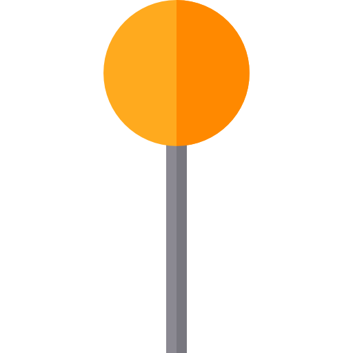
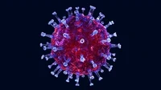

About the page
This page contains practical travel information for international travelers planning a visit to Sri Lanka during the Coronavirus pandemic.
As Sri Lanka begins to open up for leisure travelers, we are happy to welcome you to Sri Lanka! We want to reassure you that our travel service providers are adhering to all health guidelines to ensure your safe and comfortable stay with us.
Latest news
Sri Lanka is looking forward to welcoming leisure travelers from a growing number of European countries as of 13 July. There would be no border control for travelers from these countries and they would not need to self-quarantine on arrival in Sri Lanka.
The Sri Lankan Government agreed that as of 13 July, it would lift the internal border control and restrictions on traffic between Sri Lanka and countries where the incidence of COVID-19 is similar to that in countries where internal border control has already been lifted. These countries are Norway, Denmark, Iceland and the Baltic countries. At present, the limit value is a maximum of eight new cases of the disease per 100,000 persons in the previous 14 days. The Government will update the new list countries based on the development of the epidemic by 10 July.
Work-related, essential travel (for example a family reason, a personal reason or travel to a property, private residence or holiday residence in Finland or the purchase of one) and return traffic is possible from EU and Schengen countries as well as the UK. However currently travelers entering Sri Lanka from all but Norway, Denmark, Iceland and the Baltic countries are recommended to self-isolate for 14 days upon arrival. Entry restrictions (excluding transit) to Finland for travelers from countries outside the EU remain in place until at least until 14 July.
General health and safety measures regarding coronavirus in Sri Lanka include avoiding physical contact, maintaining a safe distance from other people and observing good hand and respiratory hygiene. There is no guidance on using face masks outdoors, in public indoor spaces or on public transport, however Finnish airports strongly recommend using face masks.
Sights and attractions have been opening as of 1 June. Please check their websites for up-to-date information on opening times any specific safety considerations.
Accommodation and other services for travelers are also opening up, please check with your chosen service provider for the availability of their service and any specific safety considerations.

Useful travel information and links
MONITOR STATEMENTS AND GUIDANCE
Travelers are asked to closely monitor statements and guidance issued by their home countries’ public authorities, health officials and embassies, in order to receive timely information on matters such as quarantine instructions upon arrival at home. You can find the contact information of your own Embassy in Finland on the list of representations of foreign countries in Finland maintained by Finland’s Ministry for Foreign Affairs.
VISA VALIDITY
Please note that the police may extend the validity of a visa in the event that flight cancellations, for example, prevent the visa holder from leaving Finnish territory before their visa expires. For more info please contact the police.
TRAVEL TRADE
To find out more about how Finland is opening up for leisure travel from the travel trade perspective, please visit the Travel Trade Travel Recovery site at Businessfinland.fi.